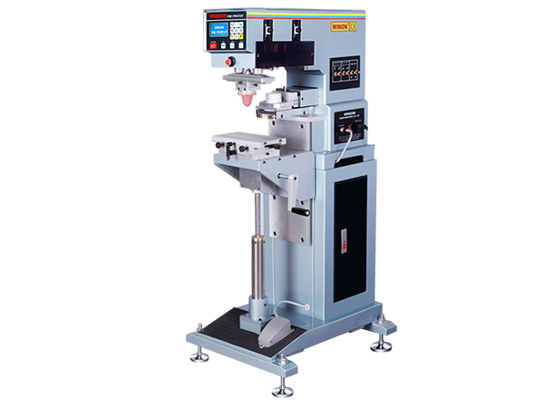
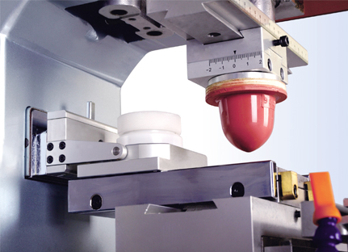
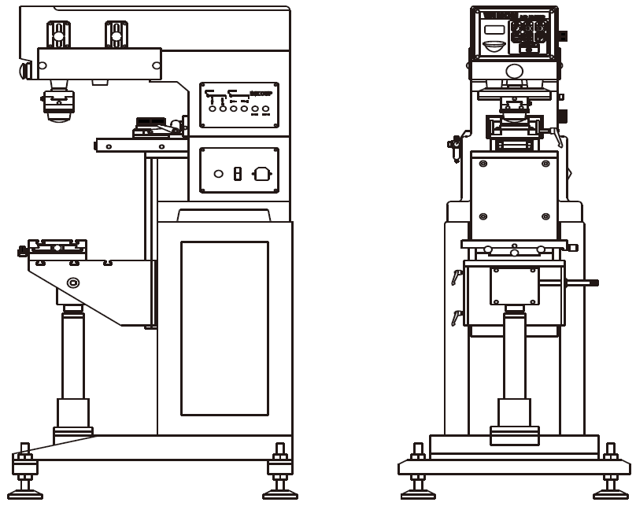

Plastic Products
Electronic housings, containers, and industrial parts.

PAD PRINTING MACHINE
Winon Industrial Co., Ltd. — Hong Kong
| Model | WN-121XE |
|---|---|
| Printing Color | 1 Color |
| Machine Type | Automatic ink cup pad printing machine |
| Suitable Materials | Plastic, metal, glass, and industrial components |
Contact us for the complete technical specification, available configurations, and production requirements.

BUILT FOR PRODUCTION

The Winon WN-121XE is designed for precision printing on plastic, metal, glass, ceramic, and other industrial components requiring clean and consistent print quality.
Electronic housings, containers, and industrial parts.
Pens, gifts, and advertising products.
Bottles, caps, and packaging components.
Automotive and precision parts.
Contact Printway Marketing & Services for pricing, machine demonstrations, spare parts, consumables, and technical support.
Request a Quote